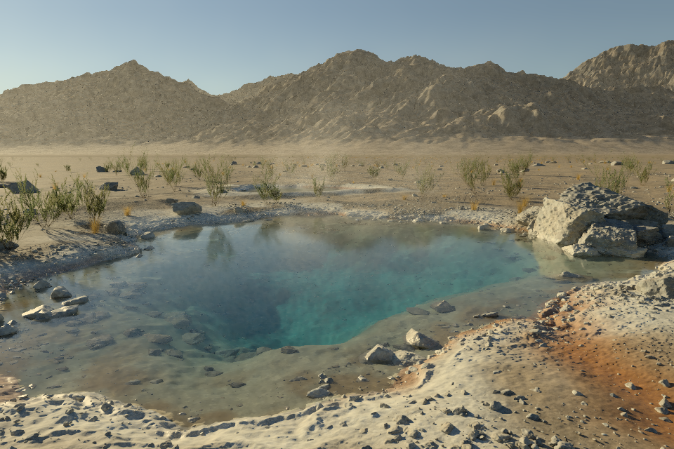

The original scene is the baseline. This comparison uses the original camera, geometry recipe, sky, water, steam and surface shading. No miniature compression or image projection.

01 / Retained original render02 / Rebuilt full-detail scene — checking availability